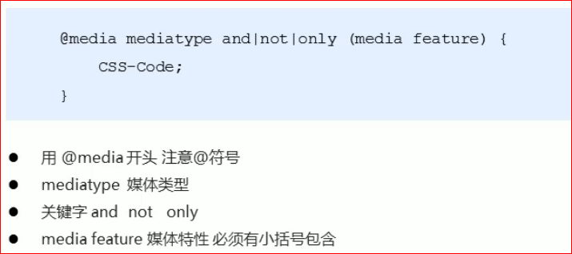

媒体查询
@media 可以针对不同的屏幕尺寸设计不同的样式
@media mediatype and|not|only (media feature) {
css样式
}
下面的意思: 在屏幕上 并且 最大宽度为1080像素 设置css样式
@media sreen and (max-width:1080px) {
css样式
}

mediatype 查询类型
将不同的终端设备划分成不同的类型，称为媒体类型
- all: 用于所有设备
- print: 用于打印机和打印预览
- screen: 用于电脑屏幕、手机、平板等
关键字
关键字将媒体类型或多个媒体特性连接到一起作为媒体查询的条件
- not: 排除某个媒体类型, 相当于 '非' 的意思, 可以省略
- only: 指定某个特定的媒体类型, 可以省略
- and: 可以将多个媒体特性连接到一起, 相当于 '且' 的意思
媒体特性
每种媒体类型都具有各自不同的特性, 根据不同媒体类型的媒体特性设置不同的展示风格
媒体特性需要写在小括号内
- width: 定义输出设备中 页面可见区域的宽度
- min-width: 定义输出设备中 页面可见区域的最小宽度
- max-width: 定义输出设备中 页面可见区域的最大宽度